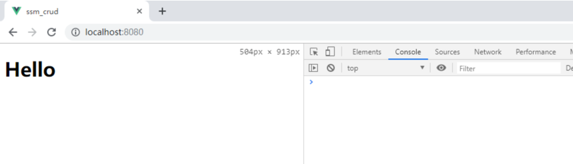

指的是浏览器不能执行其他网站的脚本。它是由浏览器的同源策略造成的，是浏览器对javascript施加的安全限制。
是指协议，域名，端口都要相同，其中有一个不同都会产生跨域，在请求数据时，浏览器会在控制台中报一个异常，提示拒绝访问。
开发一些前后端分离的项目，比如使用 SpringBoot + Vue 开发时，后台代码在一台服务器上启动，前台代码在另外一台电脑上启动，此时就会出现问题。
比如：
后台 地址为 http://192.168.70.77:8081
前台 地址为 http://192.168.70.88:8080
此时 ip 与 端口号不一致， 不符合同源策略，造成跨域问题。
（1）step1：创建 vue 项目
参考 https://www.cnblogs.com/l-y-h/p/11241503.html
（2）step2：使用 axios
参考 https://www.cnblogs.com/l-y-h/p/11656129.html
（1）step1：删去 vue 项目初始提供的部分代码，如下图
运行截图：

（2）step2：使用 axios
【App.vue】
<template>
<div>
<button @click="testAxios">TestAxios</button>
</div>
<!--App -->
</template>
<script>
// 引入axios
import Axios from 'axios'
export default {
methods: {
testAxios() {
const url = 'https://www.baidu.com/'
Axios.get(url).then(response => {
if (response.data) {
console.log(response.data)
}
}).catch(err => {
alert('请求失败')
})
}
}
}
</script>
<style>
</style>
此时点击按钮，会出现跨域问题。
（3）常见错误解决
【question1：】
'err' is defined but never used (no-unused-vars)
这个问题，是由于 vue 项目安装了 ESLint 。
暴力解决：直接关闭 ESLint
在 package.json 文件中 添加
"rules": {
"generator-star-spacing": "off",
"no-tabs":"off",
"no-unused-vars":"off",
"no-console":"off",
"no-irregular-whitespace":"off",
"no-debugger": "off"
}
（1）step1：配置 baseURL
可以自定义一个 js 文件，也可以直接在 main.js 中写。
【main.js】
import Vue from 'vue'
import App from './App.vue'
// step1：引入 axios
import Axios from 'axios'
Vue.config.productionTip = false
// step2：把axios挂载到vue的原型中，在vue中每个组件都可以使用axios发送请求,
// 不需要每次都 import一下 axios了，直接使用 $axios 即可
Vue.prototype.$axios = Axios
// step3：使每次请求都会带一个 /api 前缀
Axios.defaults.baseURL = '/api'
new Vue({
render: h => h(App),
}).$mount('#app')
（2）step2：修改配置文件（修改后要重启服务）
vue 3.0 通过 vue.config.js 文件 修改配置（若没有，则直接在项目路径下新建即可）。
【vue.config.js】
module.exports = {
devServer: {
proxy: {
'/api': {
// 此处的写法，目的是为了 将 /api 替换成 https://www.baidu.com/
target: 'https://www.baidu.com/',
// 允许跨域
changeOrigin: true,
ws: true,
pathRewrite: {
'^/api': ''
}
}
}
}
}
（3）step3：修改 axios 使用方式
【App.vue】
<template>
<div>
<button @click="testAxios">TestAxios</button>
</div>
<!--App -->
</template>
<script>
export default {
methods: {
testAxios() {
// 由于 main.js 里全局定义的 axios,此处直接使用 $axios 即可。
// 由于 main.js 里定义了每个请求前缀，此处的 / 即为 /api/，
// 经过 vue.config.js 配置文件的代理设置，会自动转为 https://www.baidu.com/，从而解决跨域问题
this.$axios.get('/').then(response => {
if (response.data) {
console.log(response.data)
}
}).catch(err => {
alert('请求失败')
})
}
}
}
</script>
<style>
</style>
重启服务后，点击按钮，可以成功访问。